Ссавці
Різноманітний ряд плацентарних, як сухопутних, так і морських, поширених майже по всьому світу.
Родини
- Bовчі
- Ведмежі
- Котячі
- Куницеві
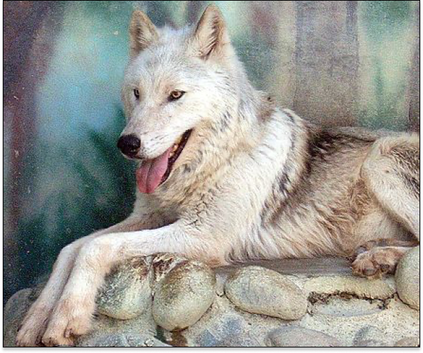
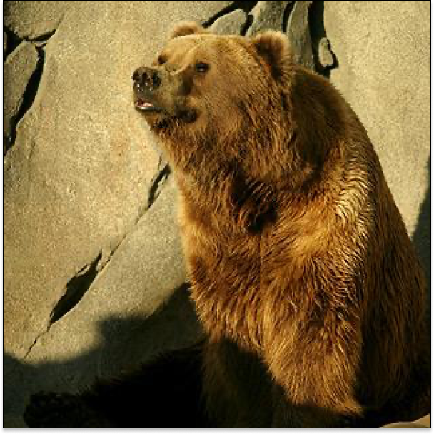
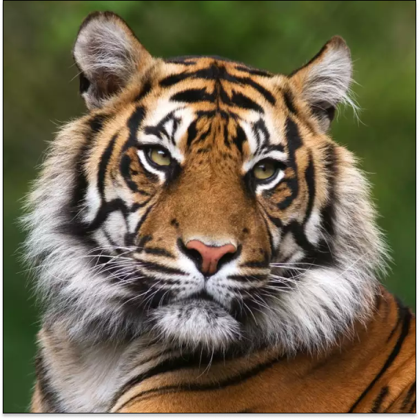
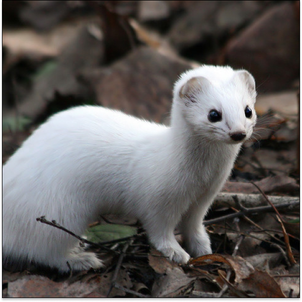
Bовчі
Родина ссавців ряду хижих підряду псовидих, багато видів якої одомашнили. Тварини поширені на всіх континентах, окрім Антарктиди. Представлена в Австралії динго, Canis familiaris dingo, підвидом, введеним людиною в доісторичні часи. Викопні рештки Canidae датуються олігоценом і міоценом. У першу чергу плотоїдні, але більш всеїдні, ніж багато хижаків, приймаючи як харчі безхребетних, рослинну їжу і падло. Родина містить ≈ 38 сучасних видів.
Ці родини поділяють на 2 грапи псів і лисиць.
Лисиць
Псів
- Лисиця
- Єнот
- Вухата лисиця
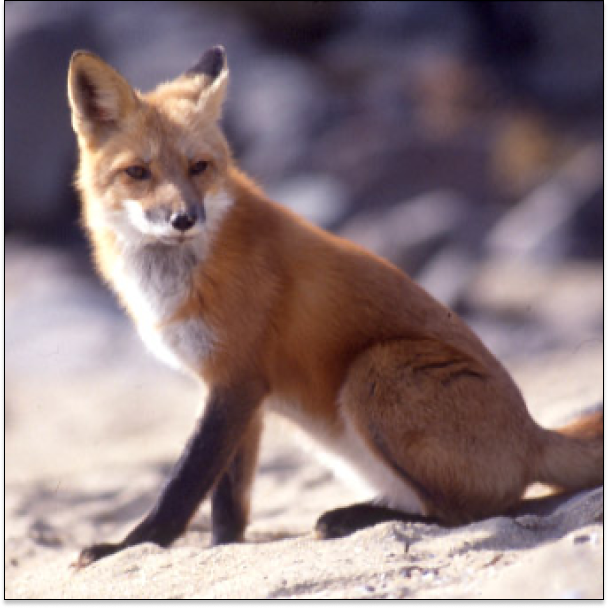
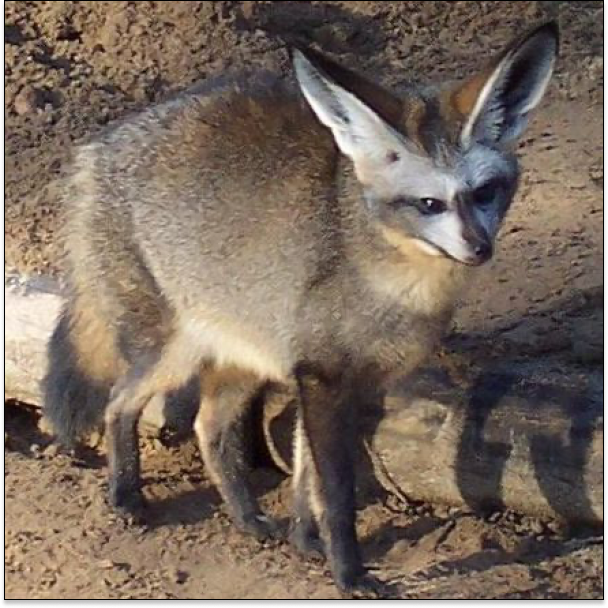
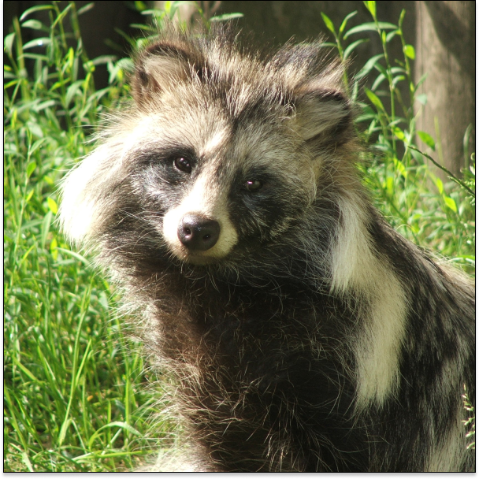
- Пес
- Atelocynus
- Cerdocyon
- Chrysocyon
- Куон
- Lycaon
- Lupulella
- Зорро
- Speothos
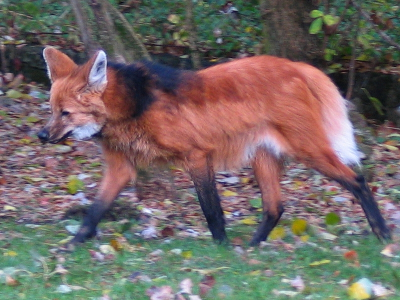
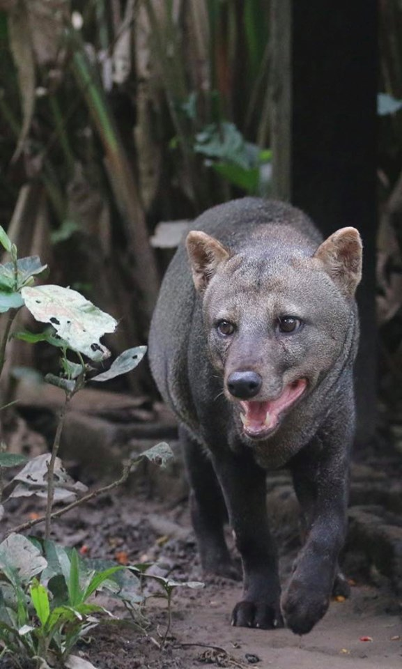
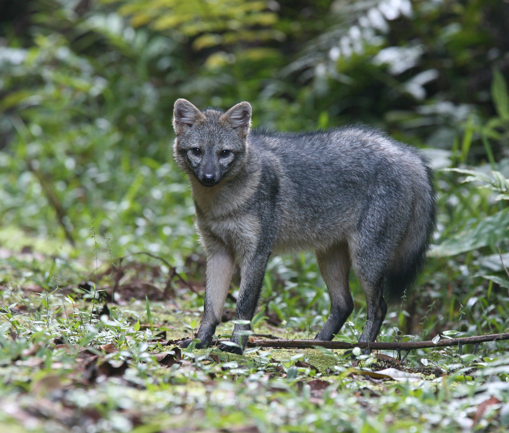

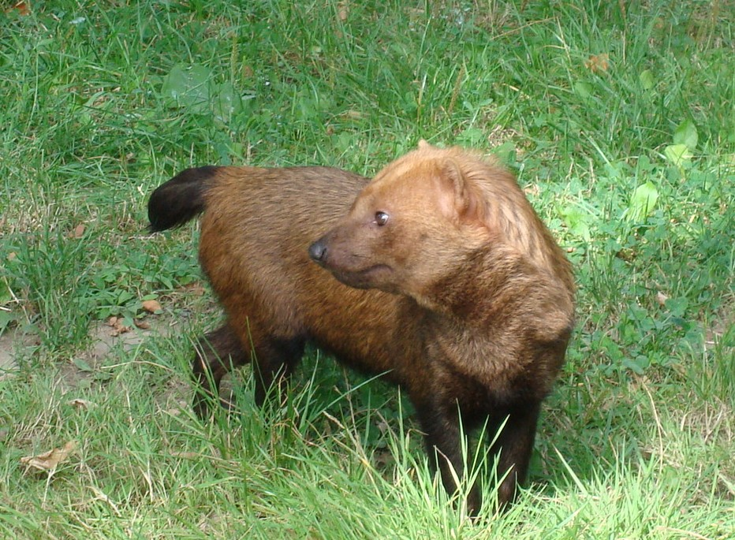
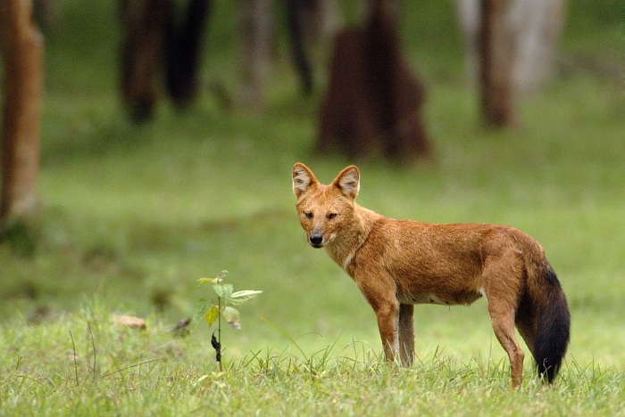
Ведмежі
Рід ссавців загону хижих.
Згідно з палеонтологічними даними, рід ведмедів з'явився 5-6 мільйонів років тому. Першим його представником нині вважають ведмедя Ursus minimus — відносно невелику тварину, чиї викопні залишки знайдено на території Франції. Усі сучасні чотири види роду, а також ряд вимерлих — таких, як печерний ведмідь (Ursus spelaeus), — походять від етруського ведмедя (Ursus etruscus), який жив 1—2 мільйони років тому.
Наймолодшим видом роду є білий ведмідь, який відокремився від бурого ведмедя приблизно 200 000 років тому.
Ведмежі
Родина ссавців ряду хижих (Carnivora), центральна родина підряду котовиді (Feliformia). Родина містить 2 підродини, 8 родоводів, 14 родів, 40 сучасних видів. Це найбільш спеціалізовані серед хижих тварини, пристосовані до добування тваринної їжі шляхом підкрадання, підстерігання, рідше переслідуванням
Лисиць
- Каракал
- Сервал
- Кіт
- Леопард
- Рись
- Манул
- Азійський кіт
- Мармурова кішка
- Катопума
- Пума
- Ягуарунді
- Гепард

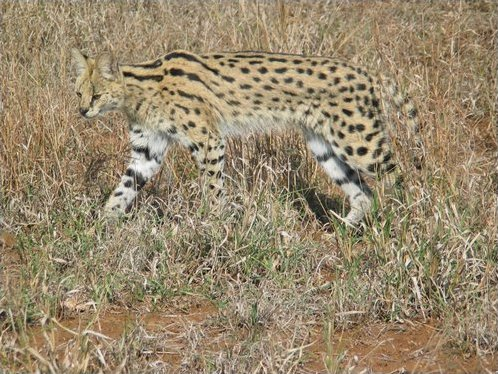

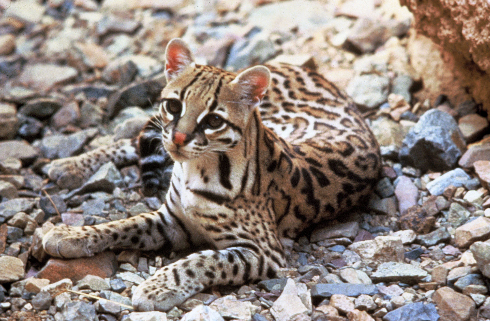
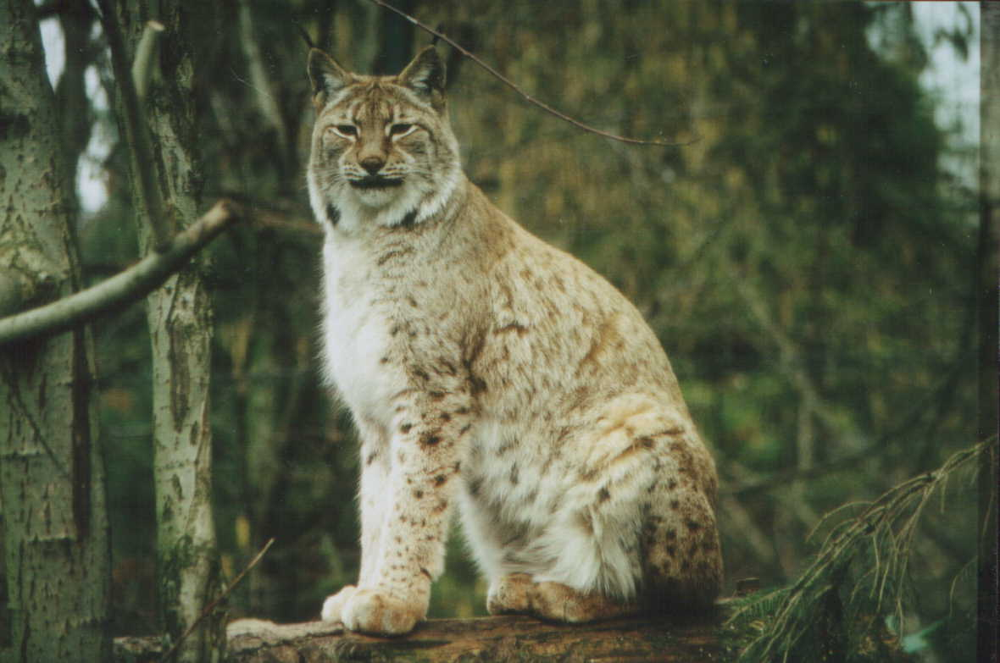
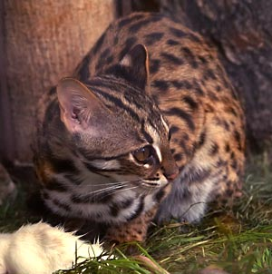
Куницеві
Родина ссавців ряду хижих. Є найбагатшою видами родиною хижих ссавців, містить 66 сучасних видів у 23 родах. Куницеві сформувалися приблизно 40 мільйонів років тому. До куницевих відносяться куниці, норки, видри, борсуки, тхори та подібні до них тварини. Куницеві вміють добре пристосовуватися до різних умов, тому представлені майже у всіх частинах Землі.